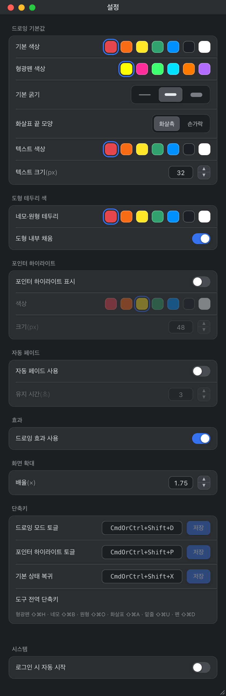

01
레이저 포인터는 화면에 남지 않는다
물리 레이저는 녹화와 화상 공유에 잡히지 않고, 온라인 발표에서는 아예 무용지물입니다. 가리키는 순간이 지나면 아무것도 남지 않습니다.
발표·강의·데모 중 화면 전체가 캔버스가 됩니다. 그린 것은 남기고, 핵심을 보여주며 발표를 계속하세요.
macOS 전용 · Apple Silicon · 서명·공증 완료 · 무료 오픈소스(MIT)
현재 배포 버전 v0.1.6 · v0.2.0(오픈소스 전환) 다운로드 링크는 배포 후 열립니다
발표의 절반은 슬라이드 밖에서 일어납니다.
01
물리 레이저는 녹화와 화상 공유에 잡히지 않고, 온라인 발표에서는 아예 무용지물입니다. 가리키는 순간이 지나면 아무것도 남지 않습니다.
02
Keynote·PowerPoint의 내장 펜은 그 앱의 슬라이드쇼 안에서만 동작합니다. 브라우저, IDE, 라이브 데모, 바탕화면에서는 쓸 수 없습니다.
03
기존 화면 주석 도구는 그리는 동안 아래 앱 클릭을 막습니다. 스크롤 한 번 하려면 주석을 지우고 모드를 빠져나가야 합니다. 발표 흐름이 끊깁니다.
위의 세 문제에 하나씩 대응합니다.
투명 오버레이가 모든 앱 위를 덮습니다. 브라우저든 IDE든 슬라이드든, 지금 보이는 화면 위에 바로 그립니다. 그린 것은 화면에 남습니다.
⇧⌘D 한 번이면 드로잉 모드. 어떤 앱을 쓰고 있든 즉시 펜이 나옵니다.
드로잉 모드를 꺼도 주석은 화면에 그대로 남고 클릭은 아래 앱으로 통과합니다. 드로잉 모드 안에서도 드래그는 그리고 클릭은 아래 앱으로 통과하며, ⌥Space를 누르고 있는 동안에는 스크롤·타이핑까지 아래 앱이 받습니다.
Tauri(Rust) 기반. 브라우저 런타임을 통째로 끌고 다니지 않습니다. Dock을 차지하지 않고 메뉴 막대에만 상주합니다.
네트워크는 트레이 메뉴를 열 때의 업데이트 확인 한 번뿐입니다. 화면 픽셀은 '화면 확대'를 실행한 순간에만 읽습니다.
Apple Developer ID 코드 서명 + Apple 공증을 통과한 DMG로 배포합니다.
발표에 필요한 것만. 펜부터 화면 확대까지 8가지 도구와 3가지 모드.
속도 기반 스트로크 스무딩. 마우스로도 손글씨 같은 선.
multiply 합성 반투명 선. Shift로 45° 스냅 직선 바. 네온 6색.
드래그로 사각형. Shift면 정사각형. 테두리 색·내부 채움 온오프.
드래그로 타원. Shift면 정원. 테두리·채움 규칙은 네모와 같음.
끝 모양 3종(화살촉·손가락·이미지). Shift로 수평·수직·45° 스냅.
y 편차 12px 이내면 수평 자동 스냅, 넘으면 자유 직선.
클릭 지점에 입력 상자. Enter 줄바꿈, 상자 밖 클릭 확정, Esc 취소.
스친 도형을 도형 단위로 삭제. 픽셀 지우개가 아닙니다.
그리기 바깥에서 오펜이 하는 일.
A · ⇧⌘P
커서 주변에 반투명 링을 띄워 시선을 모읍니다. 클릭하면 탭 링이 퍼져 "지금 여기를 눌렀다"가 녹화·공유 화면에서도 보입니다. 클릭은 아래 앱으로 그대로 통과합니다.
링 지름은 24–96px(기본 48px). 해제는 ⇧⌘X 또는 ⇧⌘D로 다른 모드에 들어가면 됩니다.
B · ⇧⌘F
확대할 영역을 드래그하면 그 자리에서 설정 배율(기본 1.75×, 1.2×–2.0×)로 확대됩니다. 확대된 화면 위에 펜으로 계속 그릴 수 있습니다. Esc 또는 렌즈 밖 클릭으로 원래 배율로 돌아옵니다.
화면 픽셀 읽기는 이 기능을 실행하는 동안에만 일어납니다. 평상시에는 화면을 읽지 않습니다.
macOS 최초 사용 시 '화면 기록' 권한이 필요합니다. 허용하지 않으면 확대 영역이 검게 나옵니다.
C · 설정
자동 페이드를 켜면 주석이 지정 시간(1–30초, 기본 3초) 후 제자리에서 서서히 사라집니다. 지우는 조작 없이 흐름을 유지합니다. 기본값은 꺼짐.
드로잉 효과는 등장 애니메이션과 은은한 글로우를 더합니다. 기본값은 꺼짐이며, 끈 상태에서는 도형이 각진 형태로 즉시 그려집니다.
D · 설정
누른 단축키 조합을 화면 하단에 배지로 실시간 표시합니다(예 ⌘⇧D). 모디파이어가 하나 이상 포함된 입력만 표시하고, 일반 타이핑은 표시하지 않습니다. 표시 전용이라 저장·전송이 없습니다.
옵트인이며 기본값은 꺼짐. 끈 상태에서는 전역 키 모니터를 등록조차 하지 않습니다. macOS '손쉬운 사용' 권한이 필요합니다.
손이 키보드를 떠나지 않습니다. macOS 기준(⇧ Shift · ⌘ Command · ⌥ Option).
| 동작 | 키 | 변경 |
|---|---|---|
| 드로잉(펜) 모드 토글 | ⇧⌘D | 가능 |
| 포인터 하이라이트 모드 | ⇧⌘P | 가능 |
| 기본 상태 복귀 (커서 모드) — 그린 도형은 지우지 않음 | ⇧⌘X | 가능 |
| 형광펜 선택 + 드로잉 모드 | ⇧⌘H | 고정 |
| 네모 박스 선택 + 드로잉 모드 | ⇧⌘B | 고정 |
| 원형 박스 선택 + 드로잉 모드 | ⇧⌘O | 고정 |
| 화살표 선택 + 드로잉 모드 | ⇧⌘A | 고정 |
| 밑줄 선택 + 드로잉 모드 | ⇧⌘U | 고정 |
| 화면 확대(줌 렌즈) 진입/해제 | ⇧⌘F | 고정 |
| 설정 창 열기 | ⇧⌘, | 고정 |
| 홀드 피크 — 누르는 동안 아래 앱 조작 | ⌥Space | 고정 |
도구 단축키는 커서 모드에서 눌러도 드로잉 모드로 자동 진입한 뒤 그 도구를 선택합니다. 펜은 별도 키가 없고 ⇧⌘D의 기본 도구입니다.
드로잉 모드 안: Esc 1회 = 마지막 도형 삭제 · 빠르게 2회 = 전체 삭제 · 3회 = 커서 모드 · ⌘Z / ⇧⌘Z 실행 취소·다시 실행(최대 100단계) · Delete 전체 삭제(취소 가능).
macOS 시스템이 이미 선점한 조합(예: Spotlight)은 OS가 우선합니다.
트레이 아이콘 → 설정… 또는 ⇧⌘,. 모든 변경은 즉시 적용·자동 저장됩니다. 저장 버튼이 있는 곳은 단축키뿐입니다.

설정 창 캡처(v0.1.x). 현재 빌드는 '키 입력 표시' 섹션이 추가돼 재촬영 예정 (T-11).
전체 FAQ는 별도 페이지에 싣습니다.
홈페이지에서 DMG를 받아 열고, 오펜 아이콘을 응용 프로그램 폴더로 드래그하면 끝입니다.
메뉴 막대 아이콘을 클릭해 팝오버를 열 때 새 버전이 있는지 확인하는 요청 한 번만 나갑니다. 백그라운드에서 주기적으로 통신하지 않고, 사용 데이터를 수집·전송하지 않습니다.
다른 앱이나 macOS 시스템(예: Spotlight)이 같은 조합을 선점하면 그쪽이 우선합니다. 설정 → 단축키에서 다른 조합으로 바꿔보세요.
시스템 설정 → 개인정보 보호 및 보안 → 화면 기록에서 오펜을 허용하세요.